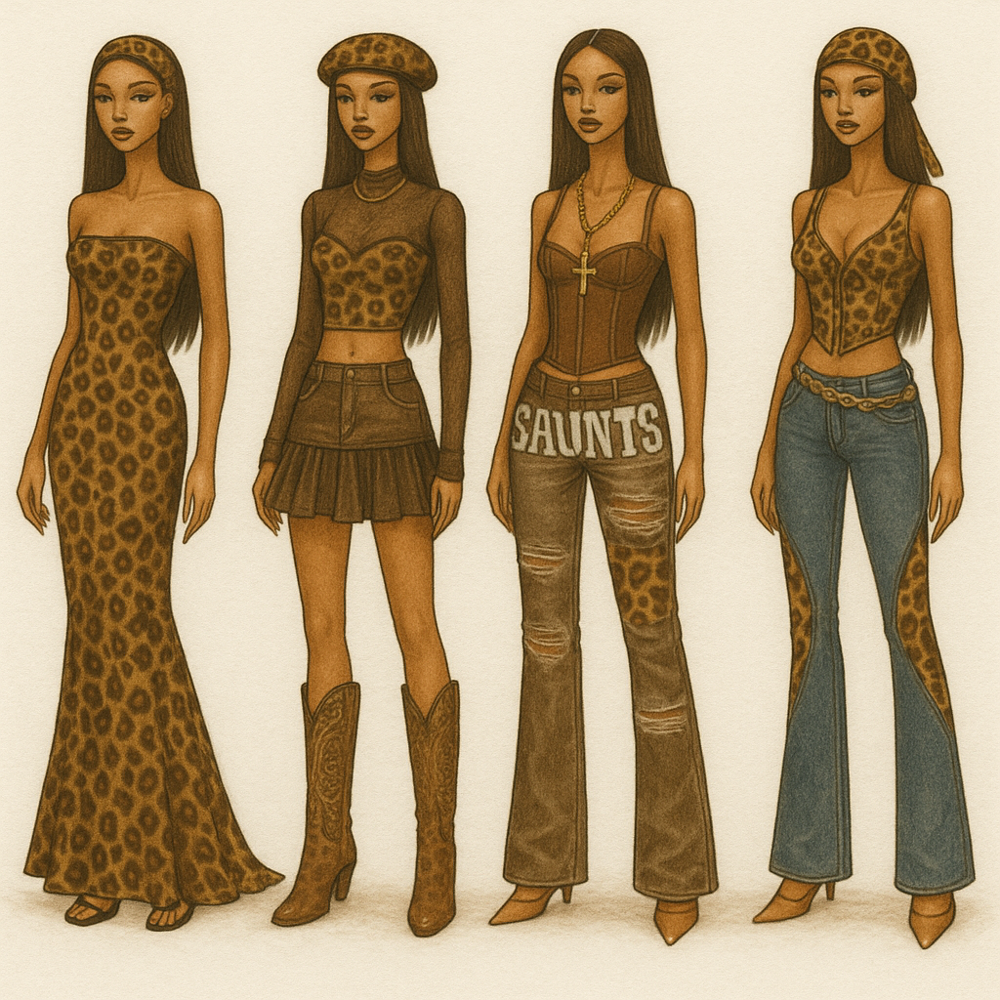
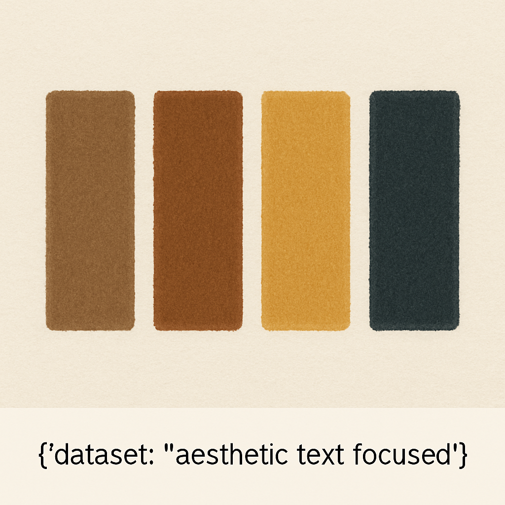

Gold Savage
A coleção "Gold Savage" é inspirada na estética da força feminina afrocentrada, no luxo urbano dos anos 2000 e na ousadia animal print com ouro — uma celebração do poder, da ancestralidade e da sensualidade sem desculpas. É uma coleção de atitude, que mistura referências do hip-hop, do Y2K e do visual “ghetto fabulous” com um toque contemporâneo.
Paleta de Cores
- Marrom médio quente
- Marrom avermelhado/canela
- Mostarda dourada intensa
- Verde-oliva escuro acinzentado
Coleção Gold Savage
Gold Savage
A coleção "Gold Savage" é inspirada na estética da força feminina afrocentrada, no luxo urbano dos anos 2000 e na ousadia animal print com ouro — uma celebração do poder, da ancestralidade e da sensualidade sem desculpas. É uma coleção de atitude, que mistura referências do hip-hop, do Y2K e do visual “ghetto fabulous” com um toque contemporâneo.
Paleta de Cores
- Marrom médio quente
- Marrom avermelhado/canela
- Mostarda dourada intensa
- Verde-oliva escuro acinzentado
Materiais
- Jersey stretch ou malha canelada: Para tops ajustados e vestidos com elasticidade.
- Denim (jeans): Para calças e tops, misturando com animal print para manter o visual casual-chic.
- Veludo estampado: Dá um ar sofisticado ao animal print, ótimo para acessórios ou toques estratégicos.
- Tule ou mesh estampada: Para peças sobrepostas, como blusas de manga longa, acrescentando textura leve.
- Couro sintético/verniz: Perfeito para adicionar força e um ar sexy, especialmente em peças como corsets, calças e botas.

